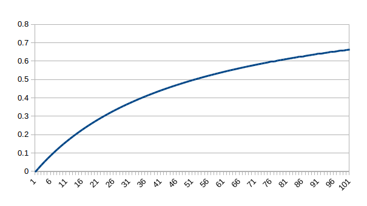
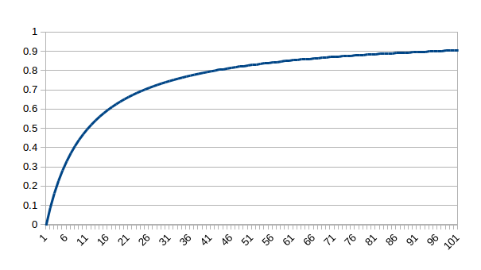
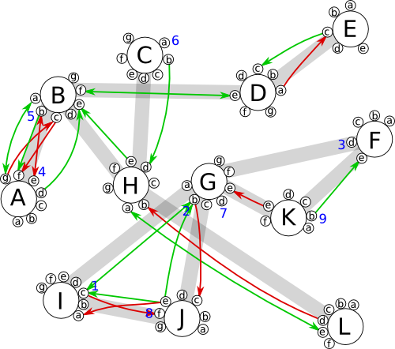

Traversal is a website allowing users to design textual and graphical information slides containing questions and multiple choice answers. The user then arranges the slides into a decision tree, which upon submission is assigned a unique URL and an HTML snippet for embedding on forums and other websites. Typical uses might include quizzes, diagnostic tools, FAQs, troubleshooting guides, polls and surveys, etc. The primary rationale for this project however came from the observation that to make a persuasive argument—whether it's in politics, economics, philosophy, etc.—it helps to tailor one's statements according to the subject's existing beliefs and how they react to what has been said already. A decision tree therefore seems like a good way of arranging a series of arguments to make a persuasive case. This alone would be a reasonably worthwhile project, but it get's more interesting.
Trees may be linked together into a large directed graph so that when a user reaches the end of one tree they are seamlessly transported to the root of another. What could be the rule that determines how trees are connected? One interesting possibility is to connect to a leaf the tree that is most persuasive against the position represented by the leaf. This could be the tree that is statistically most likely to result in the user landing on a different leaf should they traverse the same tree again. One approach might be as follows: For all users that have traversed a tree \(t\) twice, landing on leaf \(l\) the first time and some other leaf the second time, find the set of trees that were visited between the two traversals that might have influenced the user to change their answers. The most influential tree is the one we attach to leaf \(l\). It's dubious whether this would result in a desired graph, as people tend not to change their minds often and when they do it's unlikely to be a result of browsing the website, thus a tree's mind-changing effect will likely be statistically small and hard to detect without a large sample size.
Moreover, the following constraints add considerably to the difficulty of the problem:
These constraints were chosen with the end user experience in mind. The first point means that it will not be possible to directly measure the probability of a user's traversal being altered by another tree. Much of this document therefore discusses the problem of designing some reasonable way of approximating this hypothetical value well enough to yield a desirable result. First, some definitions.
| \(u\) | User |
| \(U\) | Set of all users. |
| \(n\) | Node |
| \(N\) | Set of all nodes. |
| \(t =\{n_0, n_1, ..., n_k\}\) | Tree |
| \(T\) | Set of all trees. |
| \(leaves(t) \subset t\) | The leaves of tree \(t\). |
| \(L := \{l : \exists t \in T \wedge l \in leaves(t)\}\) | Set of all leaf nodes. |
| \(tree(n)\) | The tree to which node \(n\) belongs. |
| \(children(t)_l\) | Child tree connected to leaf node \(l \in t\). |
| \(parents(t):=\{p : p \in T \wedge t\in children(p)\}\) | Set of parent trees of \(t\). |
| \(Tr(t, u)=l\) | Traversal of tree \(t\) by user \(u\) ending at leaf node \(l\). |
| \(s=\langle u, t, l \rangle = \langle u, t, Tr(t, u) \rangle\) | Traversal of tree \(t\) by user \(u\) ending at leaf node \(l\). |
| \(S\) | List of ALL traversals. |
| \(S_{u=u} := \langle s : s \in S \wedge s.u = u \rangle\) | List of all traversals by user \(u\). |
| \(S_{t=t}:=\langle s : s \in S \wedge s.t = t \rangle\) | List of all traversals of tree \(t\). |
| \(S_{l=l}:=\langle s : s \in S \wedge s.l = l \rangle\) | List of all traversals resulting in node \(l\). |
| \(S_{t=t, u=u} := \langle s : s \in S \wedge s.t = t \wedge s.u = u \rangle\) | List of all traversals of tree \(t\) by user \(u\). |
| \(T_u := \langle s.t : s \in S_{u=u} \rangle\) | List of all trees traversed by user \(u\). |
| \(L_u := \langle s.l : s \in S_{u=u} \rangle\) | List of all leaves user \(u\) landed on. |
| \(D_u := \langle children(s.t)_{s.l} : s \in S_{u=u} \rangle\) | List of all trees user \(u\) traversed into. |
Imagine that constraint 1 above was lifted allowing us the option of testing the same user on the same tree at some time in the future to see whether they land on a different leaf the second time around. With enough users we can then calculate the likelihood that traversing a particular tree \(d\) will change a user's traversal of another tree \(t\) (away from a given leaf \(l \in t\)) and assign it a score on this basis. The tree with the highest score can then be attached to \(l\).
Given a pair of traversals by the same user on the same tree, with other traversals intervening:
\(T_u= \langle ..., t_x \rangle \cup T_{u, l_i\rightarrow l_j} \cup \langle t_x, ... \rangle\)
where \(l_i, l_j \in t_x\) and \(T_{u, l_i \rightarrow l_j}\) is the list of trees traversed by \(u\) between the two traversals in question.
if \(l_i \neq l_j\)
\(J_{l_i} \leftarrow \{(t, J_{l_i}(t) + 1) : t \in T_{u, l_i \rightarrow l_j}\}\)
else
\(K_{l_i} \leftarrow \{(t, K_{l_i}(t) + 1) : t \in T_{u, l_i \rightarrow l_j}\}\)
where \(J_{l_i}\) and \(K_{l_i}\) are maps containing the score for each tree. This is repeated for each user.
In words, the intervening trees have their scores incremented in \(J_{l_i}\) if they contribute to the user landing on a different leaf, whereas their score is incremented in \(K_{l_i}\) if the user landed on the same leaf. The function \(g\) combines these data as follows:
\(g : L \times T \rightarrow \{x : x \in \mathbb{R} \wedge -1 \leq x \leq 1\}\)
\[g(l, t) := \frac{J_l(t) - K_l(t)}{J_l(t) + K_l(t)}\]
We may introduce other parameters later, but for now the final score is simply
\(score(l, t) := g(l, t)\)
We thus attach to leaf \(l\) the tree \(t\) with the highest score.
Now, taking into account constraint 1, things become rather more complicated.
Each leaf represents a particular opinion on the subject matter to which the tree pertains. We need a way of comparing leaves from different trees to find how well the opinions they represent match. See below the secton titled Leaf-Leaf Similarity.
Given a pair of traversals by the same user on similar trees, with other traversals intervening:
\(T_u= \langle ..., t_i \rangle \cup T_{u, l_i\rightarrow l_j} \cup \langle t_j, ... \rangle\)
where \(l_i \in t_i \wedge l_j \in t_j\).
As before:
if \(l_i \not\sim l_j\)
\(J_{l_i} \leftarrow \{(t, J_{l_i}(t) + 1) : t \in T_{u, l_i \rightarrow l_j}\}\)
else
\(K_{l_i} \leftarrow \{(t, K_{l_i}(t) + 1) : t \in T_{u, l_i \rightarrow l_j}\}\)
Remember that essentially what we're trying to do is track all users' paths through the graph while looking for gradual changes in belief over time. Then, by examining the list of trees visited by each user we can score each tree according to how influential it is, and attach to each leaf \(l\) the tree that appears most responsible for persuading people away from \(l\) and its ideological neighbours.
The method described thus far ensures that trees that are popular among users who change their minds often will be given higher scores than trees that are popular among users who maintain consistent beliefs. This is not desirable. The algorithm should therefore be modified so that users who are consistent have more influence on the structure of the graph than those who are inconsistent. We therefore need to devise a measure of user consistency. Then, instead of adding \(1\) to \(J_l\) and \(K_l\) we add \(c(u)\).
\(c : U \rightarrow \{x : x \in \mathbb{R} \wedge 0 \leq x \leq 1\}\)
When a user submits a tree they provide a set of one-word tags \(W_t\).
We construct a histogram \(H_{l,t}\) to count the hits on each leaf of \(t\) among users who at an earlier time landed on \(l \not\in t\).
\(U_l := \{s.u:s \in S_{l=l}\}\)
\(H_{l, t} \leftarrow \langle s.l : s \in S \wedge s.u \in (U_l \cap U_{t}) \wedge s.t = t \rangle\)
\[|H_{l,t}| := \sum\limits_{k\in leaves(t)} H_{l,t}(k)\]
\[avr(H_{l,t}) := \frac{|H_{l,t}|}{\big|leaves(t)\big|}\]
Our similarity metric is then as follows (higher is more similar).
\(d_{leaf}(l_x, l_y) := H_{l_x, tree(l_y)}(l_y) \cdot avr(H_{l_x, tree(l_y)})^{-1}\)
Semantic relatives of \(l\) as a sorted list of pairs:
\(\hat{R_l} := sort_{p_1, desc}\Big(\big\langle \big(p_0, p_1\big) := \big(k, d_{leaf}(l, k)\big) : k \in R_l\big\rangle\Big)\)
\(cap(L_{l\sim})\) most similar leaves to \(l\):
\(L_{l\sim} := \big\{\hat{R_l}[i]_0 : \big(0 \leq i \lt cap(L_{l\sim})\big) \wedge \hat{R_l}[i]_1 \geq 1.0\big\}\)
\(cap(L_{l\sim})\) least similar leaves to \(l\):
\(L_{l\not\sim} := \big\{\hat{R_l}[i]_0 : \big(|\hat{R_l}| - cap(L_{l\sim}) \leq i \lt |\hat{R_l}|\big) \wedge \hat{R_l}[i]_1 \lt 1.0\big\}\)
where \(cap(L_{l\sim})\) is some constant, such as \(100\). Then
\(l_x \sim l_y := l_y \in L_{l_x \sim}\)
\(l_x \not\sim l_y := l_y \in L_{l_x \not\sim}\)
Notice that \(!(l_x \sim l_y) \not\equiv l_x \not\sim l_y\) and vice versa. It is possible for two leaves to be neither similar nor dissimilar.
There's another odd quirk that's worth mentioning. Given the above definitions, our similarity relations are non-commutative. Let's say \(n\) users in total have landed on leaf \(l_x\) of tree \(t_x\), i.e. \(|U_{l_x}| = n\), and let's imagine that some \(m \leq n\) of these users traverse tree \(t_y\), whom we'll refer to as \(U_{l_x, t_y} := U_{l_x} \cap U_{t_y}\), where \(|U_{l_x, t_y}| = m\). Then, if the vast majority of \(U_{l_x, t_y}\) land on leaf \(l_y\) we can say \(l_x \sim l_y\). However, this does not necessarily mean that a large number of users who land on \(l_y\) will land on \(l_x\) should they traverse \(t_x\), as there may be many leaves in \(t_x\) that represent similar beliefs, spreading the users evenly among them. Thus \(l_x \sim l_y \not\Leftrightarrow l_y \sim l_x\). This is the desired behaviour and will not cause a problem, but it's worth mentioning to avoid confusion.
We define a subscriber of \(l\) as a user who has landed on \(l\) but not yet landed on any of its semantic anti-neighbours.
Subscribers of \(l\): \[U_{sub(l)}:=U_l \setminus \{u : \exists k \in L_{u,l+} \wedge k\in L_{l\not\sim}\}\] where \(L_{u,l+}\) is the list of leaves visited by \(u\) since their last visit to \(l\): \[L_{u,l+} := \big\langle s.l : \exists a \in \mathbb{N} \wedge s \in (a, +\infty] \subset S_u \wedge S_u[a] = k \wedge S_u[a] \not\in [0, a) \subset S_u \big\rangle\]
For each leaf \(l\) we maintain a map \(M_l\) that counts for each subscriber \(u \in U_{sub(l)}\) the number of hits on the leaf's semantic neighbours \(L_{l \sim}\) until the user lands on a semantic anti-neighbour \(\in L_{l\not\sim}\) whereupon the count is reset and the user is unsubscribed from \(l\). A user's score in this map therefore represents how firm a subscriber they are, and this (among other factors) will determine the size of the user's addition to \(J_l\) and \(K_l\) when they are incremented.
Firmness of subscription: \[\hat M_l(u) := M_l(u) \cdot \Big(max_{v\in U_{sub(l)}}\big(M_l(v)\big)\Big)^{-1}\]
The most inconsistent user would be one who causes \(J_l\) maps to be updated frequently and \(K_l\) maps to be updated infrequently, thus we need only to count the additions to \(J_l\) and \(K_l\) using a pair of counters \(\alpha_u, \beta_u\), respectively. Then,
\[c(u) := \frac{1}{2}\big(1+(\beta_u - \alpha_u)(\alpha_u + \beta_u)^{-1}\big)\]
\[c : U \rightarrow \{x : x \in \mathbb{R} \wedge 0 \leq x \leq 1\}\]
A value close to zero means that \(\beta_u\) is large relative to \(\alpha_u\) and the user is therefore consistent. However, we should scale this result down for users who have made few traversals. An ideal scaling function would be one that returns \(0\) for an input of \(0\), and which tends ever closer to \(1\) as its input grows, such as:
\[f(x) = 1-\gamma(x + \gamma)^{-1}\]
where the constant \(\gamma\) determines how quickly \(f\) approaches \(1\). The figures below show the output for values \(\gamma=50\) and \(\gamma=10\).

\(f(x)=1-\gamma(x+\gamma)^{-1}, \gamma=50\)

\(f(x)=1-\gamma(x+\gamma)^{-1}, \gamma=10\)
Thus, finally we have:
\[c(u) := \frac{1}{2}\big(1+(\beta_u - \alpha_u)(\alpha_u + \beta_u)^{-1}\big) \cdot \big(1-\gamma(|S_{u=u}| + \gamma)^{-1}\big)\]
| \(\tau\) | Value of \(d_{tree}\) above which two trees may be considered similar. |
| \(cap(T_{t\sim})\) | Maximum length (capacity) of list \(T_{t\sim}\) for \(t\in T\). |
| \(\lambda_0\) | Value of \(d_{leaf}\) below which two leaves may be considered dissimilar. |
| \(\lambda_1\) | Value of \(d_{leaf}\) above which two leaves may be considered similar. |
| \(cap(L_{l\sim})\) | Maximum length of lists \(L_{l\sim}\) and \(L_{l\not\sim}\) for \(l\in L\). |
| \(\gamma\) | Factor that determines how quickly users become influential. |
For each leaf \(l\):
| \(J_l\) | Map of type \(T \rightarrow \mathbb{N}\). | Logs hits on intervening trees when a subscriber of \(l\) deviates from the crowd (and thereby unsubscribes). |
| \(K_l\) | Map of type \(T \rightarrow \mathbb{N}\). | Logs hits on intervening trees when a subscriber of \(l\) sticks with the crowd. |
| \(\{H_{l,t} : t \in T_{tree(l)\sim}\}\) | Set of maps of type \(L \rightarrow \mathbb{N}\). | Histograms that log hits made by subscribers of \(l\) on similar trees. |
| \(L_{l\sim}\) | List of leaves. | Semantic neighbours of \(l\)—list of leaves representing similar beliefs. |
| \(L_{l\not\sim}\) | List of leaves. | Semantic anti-neighbours of \(l\)—list of leaves representing dissimilar beliefs. |
| \(M_l\) | Map of type \(U \rightarrow \mathbb{N}\). | Records how firm a subscriber someone is by logging consecutive hits on semantic neighbours. |
For each tree \(t\):
| \(T_{t\sim}\) | List of trees. |
Leaf similarity metric: \[d_{leaf}(l_x, l_y) := H_{l_x, tree(l_y)}(l_y) \cdot avr(H_{l_x, tree(l_y)})^{-1}\]
Semantic relatives of \(l\): \[R_l := \big\{k : \exists t \in T \wedge k \in t \wedge t \sim tree(l)\big\}\] \[\hat{R_l} := sort_{p_1, desc}\Big(\big\langle \big(p_0, p_1\big) := \big(k, d_{leaf}(l, k)\big) : k \in R_l\big\rangle\Big)\]
Subscribers of leaf \(l\): \[U_{sub(l)}:=U_l \setminus \{u : \exists k \in L_{u,l+} \wedge k\in L_{l\not\sim}\}\] where \(L_{u,l+}\) is the list of leaves visited by \(u\) since their last visit to \(l\): \[L_{u,l+} := \big\langle s.l : \exists a \in \mathbb{N} \wedge s \in (a, +\infty] \subset S_u \wedge S_u[a] = k \wedge S_u[a] \not\in [0, a) \subset S_u \big\rangle\]
User consistency: \[c(u) := \frac{1}{2}\big(1+(\beta_u - \alpha_u)(\alpha_u + \beta_u)^{-1}\big) \cdot \big(1-\gamma(|S_{u=u}| + \gamma)^{-1}\big)\]
All the trees user \(u\) has visited since their last visit to leaf \(l\): \[T_{u, l+} := \big\langle s.t : \exists a \in \mathbb{N} \wedge s \in (a, +\infty] \subset S_u \wedge S_u[a] = k \wedge S_u[a] \not\in [0, a) \subset S_u \big\rangle\]
| 1. | When a user \(u\) lands on leaf \(l\) | |
| 2. | \(M_l \leftarrow (u, +\,1)\) | |
| 3. | For each \(k \in R_l\) | // All semantic relatives of \(l\) that \(u\) has previously visited have their histograms \(H_{k,t}\) updated. |
| 4. | If \(u \in U_{sub(k)}\) | |
| 5. | \(H_{k, tree(l)} \leftarrow l\) | |
| 6. | If \(l \in L_{k\not\sim}\) | // When user lands on leaf to which \(l\) is dissimilar, intervening traversals are logged. |
| 7. | For each \(t \in T_{u,k+}\) | |
| 8. | \(J_k \leftarrow \big(t, +\,c(u)\cdot \hat M_k(u)\big)\) | |
| 9. | \(M_k \leftarrow_{erase} u\) | |
| 10. | \(\alpha_u\leftarrow\alpha_u+1\) | |
| 11. | Else if \(l \in L_{k\sim}\) | // When user lands on leaf to which \(l\) is similar, intervening traversals are logged. |
| 12. | For each \(t \in T_{u,k+}\) | |
| 13. | \(K_k \leftarrow \big(t, +\,c(u)\cdot \hat M_k(u)\big)\) | |
| 14. | \(M_k \leftarrow (u, +\,1)\) | |
| 15. | \(\beta_u\leftarrow\beta_u+1\) | |
| 16. | For each \(l \in L\) | |
| 17. | \(children\big(tree(l)\big)_l=arg\,max_{t \in J_l}\big(score(l, t)\big)\) | |
| 18. | \(L_{l\sim} := \big\{\hat{R_l}[i]_0 : \big(0 \leq i \lt cap(L_{l\sim})\big) \wedge \hat{R_l}[i]_1 \geq \lambda_1\big\}\) | |
| 19. | \(L_{l\not\sim} := \big\{\hat{R_l}[i]_0 : \big(|\hat{R_l}| - cap(L_{l\sim}) \leq i \lt |\hat{R_l}|\big) \wedge \hat{R_l}[i]_1 \lt \lambda_0\big\}\) | |
| 20. | For each \(t \in T\) | |
| 21. | \(T_{t\sim} := \big[0, cap(T_{t\sim})\big) \subseteq sort_{desc}\big(\langle y : y\in T \wedge d_{tree}(t, y) \geq \tau \rangle\big)\) |
In the graph below, similarity between trees is represented by a thick grey line, similarity between leaves by a green line, and dissimilarity between leaves by a red line. In reality, this similarity graph will likely be very highly connected, i.e. the ratio of edges to nodes will be large.
Here is a dry run of the algorithm for a single user \(u\) traversing the path \(I_c \rightarrow G_b \rightarrow F_d \rightarrow A_e \rightarrow B_b \rightarrow C_a \rightarrow G_d \rightarrow J_f \rightarrow K_b\).
| 1 | \(I_c\) | User lands on leaf \(I_c\) |
| 2 | \(L_u \cap R_{I_c} = \emptyset\) | User has not yet visited any leaves in \(R_{I_c}\) |
| 5 | \(L_{I_c\not\sim} = \emptyset\) | Leaf has no semantic anti-neighbours |
| 9 | \(G_b \in L_{I_c\sim}\) | Leaf \(G_b\) is a semantic neighbour of \(I_c\) |
| 10 | \(T_{u, G_b+} = \emptyset\) | User has never landed on \(G_b\) |
| 9 | \(J_e \in L_{I_c\sim}\) | Leaf \(J_e\) is a semantic neighbour of \(I_c\) |
| 10 | \(T_{u, J_e+} = \emptyset\) | User has never landed on \(J_e\) |
| 1 | \(G_b\) | User lands on leaf \(G_b\) |
| 2 | \(H_{I_c, G} \leftarrow G_c\) | Log this hit in the \(H\) map for semantic relative \(I_c\) |
| 5 | \(L_{G_b\not\sim} = \emptyset\) | Leaf has no semantic anti-neighbours |
| 9 | \(I_c \in L_{G_b\sim}\) | Leaf \(I_c\) is a semantic neighbour of \(G_b\) |
| 11 | \(K_{I_c} \leftarrow \big(G, +c(u)\big)\) | User has traversed \(G\) since last landing on \(I_c\) |
| 11 | \(K_{I_c} \leftarrow \big(G, +c(u)\big)\) | User has traversed \(G\) since last landing on \(I_c\) |
| 12 | \(\beta_u\leftarrow\beta_u+2\) | User has made \(2\) additions to a \(K\) map |
| 9 | \(J_e \in L_{G_b\sim}\) | Leaf \(J_e\) is a semantic neighbour of \(G_b\) |
| 10 | \(T_{u, J_e+} = \emptyset\) | User has never landed on \(J_e\) |
| 1 | \(F_d\) | User lands on leaf \(F_d\) |
| 2 | \(H_{G_b, F} \leftarrow F_d\) | Log this hit in the \(H\) map for semantic relative \(G_b\) |
| 5 | \(L_{F_d\not\sim} = \emptyset\) | Leaf has no semantic anti-neighbours |
| 9 | \(L_{F_d\sim} = \emptyset\) | Leaf has no semantic neighbours |
| 1 | \(A_e\) | User lands on leaf \(A_e\) |
| 2 | \(L_u \cap R_{A_e} = \emptyset\) | User has not yet visited any leaves in \(R_{A_e}\) |
| 5 | \(B_b \in L_{A_e\not\sim}\) | Leaf \(B_b\) is a semantic anti-neighbour of \(A_e\) |
| 6 | \(T_{u, B_b+} = \emptyset\) | User has never landed on \(B_b\) |
| 9 | \(L_{A_e\sim} = \emptyset\) | Leaf has no semantic neighbours |
| 1 | \(B_b\) | User lands on leaf \(B_b\) |
| 2 | \(H_{A_e, B} \leftarrow B_b\) | Log this hit in the \(H\) map for semantic relative \(A_e\) |
| 5 | \(A_e \in L_{B_b\not\sim}\) | Leaf \(A_e\) is a semantic anti-neighbour of \(B_b\) |
| 7 | \(J_{A_e} \leftarrow \big(B, +c(u)\big)\) | User has traversed \(B\) since landing on \(A_e\) |
| 8 | \(\alpha_u\leftarrow\alpha_u+1\) | User has made \(1\) addition to a \(J\) map |
| 9 | \(L_{B_b\sim} = \emptyset\) | Leaf has no semantic neighbours |
| 1 | \(C_a\) | User lands on leaf \(C_a\) |
| 2 | \(L_u \cap R_{C_a} = \emptyset\) | User has not yet visited any leaves in \(R_{C_a}\) |
| 5 | \(L_{C_a\not\sim} = \emptyset\) | Leaf has no semantic anti-neighbours |
| 9 | \(L_{C_a\sim} = \emptyset\) | Leaf has no semantic neighbours |
| 1 | \(G_d\) | User lands on leaf \(G_d\) |
| 2 | \(H_{I_c, G} \leftarrow G_d\) | Log this hit in the \(H\) map for semantic relative \(I_c\) |
| 2 | \(H_{F_d, G} \leftarrow G_d\) | Log this hit in the \(H\) map for semantic relative \(F_d\) |
| 5 | \(L_{G_d\not\sim} = \emptyset\) | Leaf has no semantic anti-neighbours |
| 9 | \(L_{G_d\sim} = \emptyset\) | Leaf has no semantic neighbours |
| 1 | \(J_f\) | User lands on leaf \(J_f\) |
| 2 | \(H_{I_c, J} \leftarrow J_f\) | Log this hit in the \(H\) map for semantic relative \(I_c\) |
| 2 | \(H_{G_b, J} \leftarrow J_f\) | Log this hit in the \(H\) map for semantic relative \(G_b\) |
| 2 | \(H_{G_d, J} \leftarrow J_f\) | Log this hit in the \(H\) map for semantic relative \(G_d\) |
| 5 | \(I_c \in L_{J_f\not\sim}\) | Leaf \(I_c\) is a semantic anti-neighbour of \(J_f\) |
| 7 | \(J_{I_c} \leftarrow \big(G, +2\cdot c(u)\big)\) | User has traversed \(G\) twice since last landing on \(I_c\) |
| 7 | \(J_{I_c} \leftarrow \big(J, +c(u)\big)\) | User has traversed \(J\) since last landing on \(I_c\) |
| 8 | \(\alpha_u\leftarrow\alpha_u+2\) | User has made \(2\) additions to a \(J\) map |
| 9 | \(L_{J_f\sim} = \emptyset\) | Leaf has no semantic neighbours |
| 1 | \(K_b\) | User lands on leaf \(K_b\) |
| 2 | \(H_{G_b, J} \leftarrow K_b\) | Log this hit in the \(H\) map for semantic relative \(G_b\) |
| 2 | \(H_{G_d, J} \leftarrow K_b\) | Log this hit in the \(H\) map for semantic relative \(G_d\) |
| 2 | \(H_{F_d, J} \leftarrow K_b\) | Log this hit in the \(H\) map for semantic relative \(F_d\) |
...
...
...
We extend the conventional algebra with an additional MODIFY operation represented by the letter \(\Large\mu\).
Tree(treeId)
TreeNeighbours(treeA=Tree.treeId, treeB=Tree.treeId)
TreeTags(treeId=Tree.treeId, tagId=Tag.tagId)
Tag(tagId, string)
Node(nodeId, treeId=Tree.treeId, content)
Edge(nodeA=Node.nodeId, nodeB=Node.nodeId, content)
Leaf(leafId, nodeId=Node.nodeId)
LeafAntiNeighbours(leafId=Leaf.leafId, antiNeighbour=Leaf.leafId)
LeafNeighbours(leafId=Leaf.leafId, neighbour=Leaf.leafId)
LeafSubscriber(leafId=Leaf.leafId, userId=User.userId)
JMap(leafId=Leaf.leafId, treeId=Tree.treeId, score)
KMap(leafId=Leaf.leafId, treeId=Tree.treeId, score)
HMap(leafId=Leaf.leafId, treeId=Tree.treeId, leaf=Leaf.leafId, score)
MMap(leafId=Leaf.leafId, userId=User.userId, score)
User(userId, sessionId, email)
UserHistory(userId=User.userId, leaf=Leaf.leafId)
\[tree(l) := {\Large\pi}_{attr(Tree)}\big({\Large\sigma}_{leafId=l}(Leaf {\;\Large\Join\;} Node)\big)\] \[attr\big(tree(l)\big) = attr(Tree)\] \[T_{tree(l)\sim} := \bigg({\Large\rho}_{treeId/treeB}\Big({\Large\pi}_{treeB}\big(tree(l) {\;\Large\Join\;}_{treeId=treeA} TreeNeighbours\big)\Big)\bigg) {\;\Large\Join\;} Tree\] \[attr(T_{tree(l)\sim}) = attr(Tree)\] \[R_l := {\Large\pi}_{attr(Leaf)}(Leaf {\;\Large\Join\;} Node {\;\Large\Join\;} T_{tree(l)\sim})\] \[attr(R_l) = attr(Leaf)\] \[H_{k\in R_l,tree(l)} := {\Large\pi}_{attr(HMap)}\Big({\Large\sigma}_{userId=u}\big(R_l {\;\Large\Join\;} LeafSubscribers {\;\Large\Join\;} HMap {\;\Large\Join\;} tree(l)\big)\Big)\] \[attr(H_{k\in R_l,tree(l)}) = attr(HMap)\]
User with \(userId=u\) lands on leaf with \(leafId=l\):
\[{\Large\mu}_{score\leftarrow score + 1}\Bigg({\Large\pi}_{attr(HMap)}\Big({\Large\sigma}_{userId=u}\big(R_l {\;\Large\Join\;} LeafSubscribers {\;\Large\Join\;} HMap {\;\Large\Join\;} tree(l)\big)\Big)\Bigg)\]
\[{\Large\delta}_{userId=u}\Big({\Large\pi}_{attr(MMap)}\big({\Large\sigma}_{antiNeighbour=l}(R_l {\;\Large\Join\;} LeafAntiNeighbours {\;\Large\Join\;} MMap)\big)\Big)\]